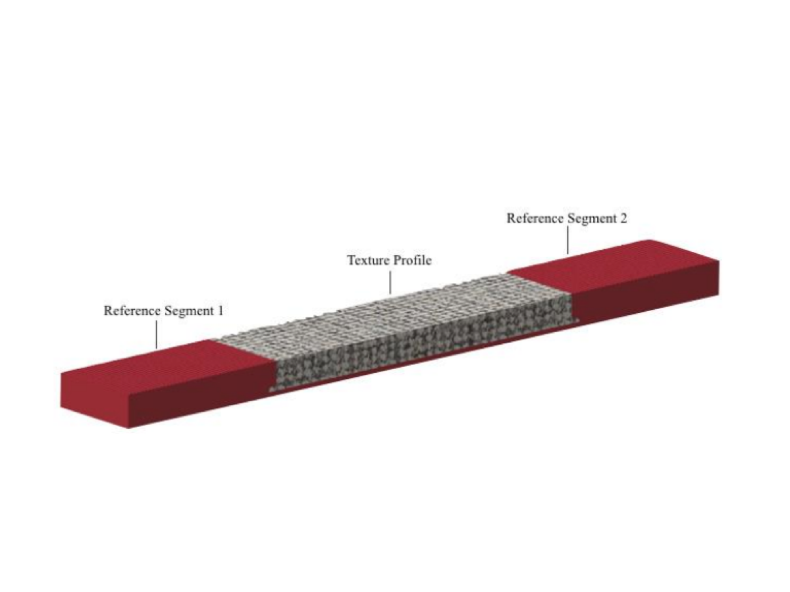

The goal of this project is to create a tool to record and playback tactile texture via fingertip actuation. Authors' vision is to have an easy-to-use and portable tool for texture designers to record and playback tactile texture. The record is done through the vibration of phonograph needle, the device that can sense vibration from a swiping finger and tranmit the signal to a computer. The texture is then simulated on haptics display whose shown texture can be felt.
My responsibility was to design and prototype a tool for recording tactile texture. This project was a part of ME 495 : Haptics class in Winter 2017 at Northwestern University
Challenges
- Due to the fact that tactile sensation varies according to normal force and swiping velocity, these factors need to be controlled to simulate the most realistic texture.
- The design and prototype must be done within two weeks timeframe.
Design and prototyping
- For this prototype, the controlled factor is limited to swiping velocity. Therefore, Swiping velocity of recorded tactile texture must be known. Once played back, the simulated texture must be swiped by the user at the same rate as it was when record to yield the most realistic result.
- With such constraints, the texture measurement apparatus was then designed to comprise of reference segments of which feature employs many small sinsusoidal waves at each end. The waves have spatial frequency of 0.5 mm. This number is calculated from human normal swiping velocity at 10cm/s, which subjects are expected to swipe at.
- The apparatus is printed with 3D rapic prototyping method. The small sindusoidal grating can be printed by rotating the orientation of the panel to be placed on the side.
- To record, subjects need to swipe his/her finger on the apparatus and the vibration is then sensed by a phonograph needle and sent to a computer. The vibration signal is separated into two parts. The first part, the middle portion, is the vibration of texture to be played back directly on haptics display. The signal is attached the carrier frequency to be felt by users on haptics display. The second part, the signal on both ends, which came from swiping the known-frequency sinusoidal grating, will be processed through FFT or Fast-Fourier Transform to find the top 10% of frequencies occured throughout each swipe.
- The texture is then playbacked on haptics display, the chameloen, owned by Neuroscience and Robotics Lab at Northwestern University. On the display, user can see moving circle which he/she needs to track to follow recorded swiping velocity.
Results
- The experiment comprises of five textures, denim, hucktowel, velvet, faux leather, and lycra. From the tests, users can differentiate between extremely different simulated textures such as denim and velvet because the vibration sensed during swipe is extremely different. However, for textures with closely related vibration, it becomes difficult for the user to differentiate between each texture. Moreover, the future improvement would be to include other characteristics such as friction force to simulate the most realistic texture.